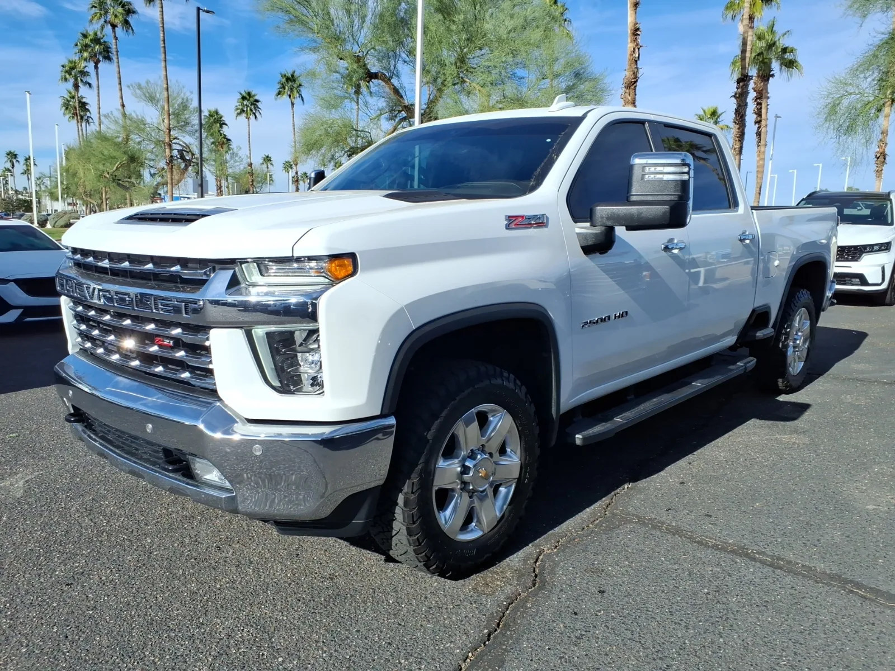
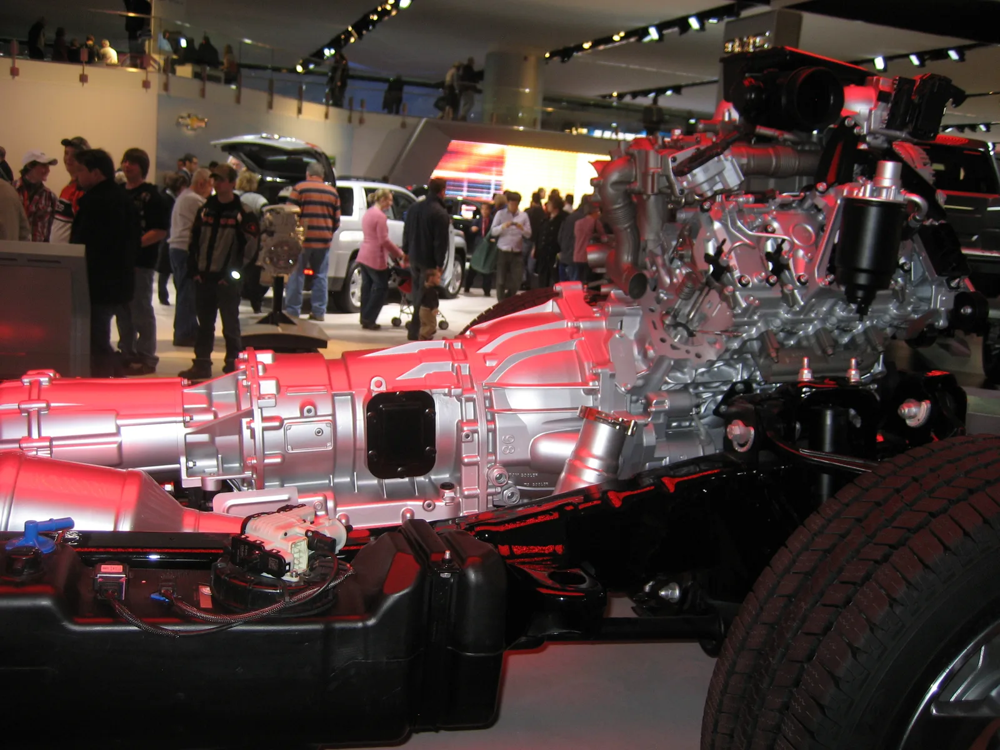
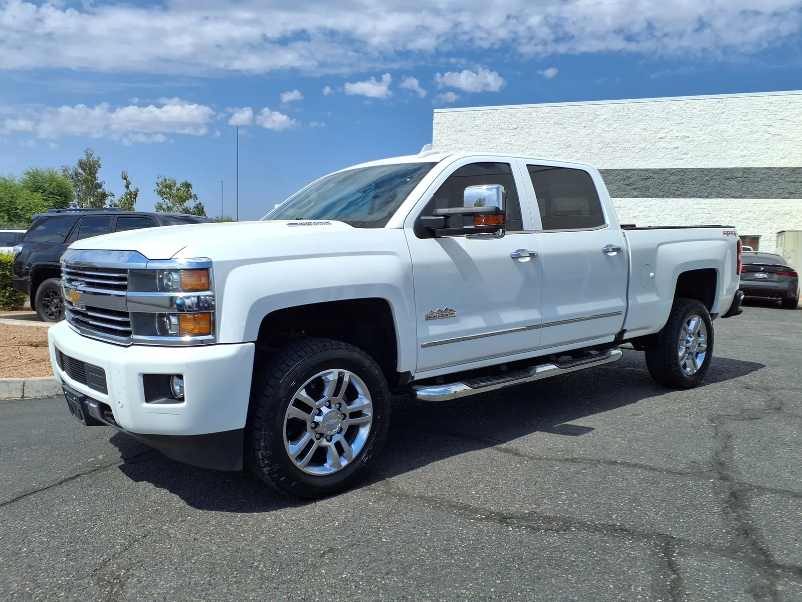

▲ GM이 공개한 신형 8.3L V8 디젤 '몽구스' 듀라맥스는 2027년형 시보레 실버라도 HD(사진)와 GMC 시에라 HD에 탑재된다
1. GM, 완전 새로 설계한 8.3L 디젤 V8 '몽구스' 공개
GM이 대형 픽업트럭용 디젤엔진을 완전히 새로 설계했다. 카스쿱스(Carscoops)와 카버즈(CarBuzz) 등 외신 보도를 종합하면, GM은 코드명 '몽구스(Mongoose)'로 불리는 신형 8.3리터 V8 듀라맥스 디젤엔진을 공식 발표했다. 기존 듀라맥스 라인업을 개량한 것이 아니라 처음부터 새로 그린 '클린시트(clean-sheet)' 설계로, GM 자체 개발이라는 점이 특징이다.
2. 555마력·1,230lb-ft — 이전 세대 대비 큰 폭 상승
신형 몽구스 듀라맥스는 555마력(414kW)의 최고출력과 1,230lb-ft(약 1,668Nm, 약 170kgf·m)의 최대토크를 낸다. 카버즈에 따르면 기존 듀라맥스 6.6L이 냈던 470마력·975lb-ft(약 1,322Nm) 대비 출력은 85마력, 토크는 255lb-ft(약 346Nm) 상승한 수치다.
내구성을 높이기 위한 구조 변경도 함께 이뤄졌다. 엔진 블록은 CGI(압축흑연주철) 소재를 사용했고, 크랭크샤프트와 커넥팅로드, 피스톤은 모두 단조(forged) 부품으로 제작됐다. 터보차저는 가변 지오메트리(VGT) 방식을 적용했으며, 2단 공랭·수랭 복합 인터쿨러(dual-stage air-to-water charge cooling)로 흡기 온도를 낮춰 안정적인 출력 발휘를 돕는다. 이 밖에 고압 연료분사 시스템, 통합형 흡기 매니폴드, 크랭크샤프트 진동 저감 하드웨어, 강화된 엔진 브레이크(배기 브레이크) 기능도 함께 적용됐다.
| 항목 | 제원 |
|---|---|
| 엔진 | 8.3L V8 디젤, 코드명 '몽구스' |
| 최고출력 | 555마력(414kW) |
| 최대토크 | 1,230lb-ft(약 1,668Nm) |
| 블록 소재 | 압축흑연주철(CGI) |
| 내부 부품 | 단조 크랭크샤프트·커넥팅로드·피스톤 |
| 터보차저 | 가변 지오메트리(VGT) + 2단 복합 인터쿨러 |
| 변속기 | 앨리슨 10L1000 10단 자동 |
| 곤스넥 견인력 | 최대 3만 8천 파운드(약 17.2톤) |
| 일반 견인력 | 최대 2만 파운드(약 9.1톤) |

▲ 듀라맥스 디젤엔진은 앨리슨 자동변속기와 짝을 이루는 것이 전통이며, 신형 몽구스 8.3L 역시 앨리슨 10L1000 10단 변속기와 결합된다(사진은 구세대 6.6L 듀라맥스·앨리슨 1000 조합 예시) ⓒ Wikimedia Commons
3. 포드 파워스트로크와의 자존심 대결
이번 발표에서 가장 주목받는 대목은 포드 파워스트로크와의 정면 비교다. 포드의 고출력 파워스트로크 디젤(코드명 '스콜피온')은 500마력·1,200lb-ft의 출력을 낸다. GM의 몽구스 듀라맥스는 이보다 55마력, 30lb-ft(약 41Nm) 더 높은 수치를 기록하며 출력·토크 양쪽에서 우위를 점했다.
다만 견인력 지표는 마력·토크만큼 간단하지 않다. GM은 몽구스 듀라맥스 탑재 트림의 곤스넥 견인력을 3만 8천 파운드(이전 세대 3만 6천 파운드 대비 상승)로 공식 발표했다. 카버즈에 따르면 이 수치는 포드 F-350 슈퍼듀티와 동률이지만, 포드 라인업 최상위인 F-450 슈퍼듀티는 4만 파운드(약 18.1톤)를 넘는 곤스넥 견인력을 광고하고 있어 여전히 GM을 앞선다. 카스쿱스 역시 같은 취지로 "포드는 여전히 4만 파운드의 곤스넥 최대치를 내세운다"고 전했다. 즉 두 매체의 수치가 상충하는 것이 아니라, 비교 대상 트림이 다른 데서 비롯된 차이로 볼 수 있다 — GM 몽구스 듀라맥스는 포드의 볼륨 트림인 F-350과는 동급이지만, 포드 최상위 트림(F-450)의 견인력 기록에는 아직 못 미친다는 뜻이다.
✅ GM 몽구스 듀라맥스 vs 포드 파워스트로크(스콜피온)
· 최고출력: 몽구스 555마력 vs 파워스트로크 500마력(GM +55마력)
· 최대토크: 몽구스 1,230lb-ft vs 파워스트로크 1,200lb-ft(GM +30lb-ft)
· 곤스넥 견인력: GM 3만 8천 파운드(F-350과 동률) — 포드 F-450은 4만 파운드 이상(포드 최상위 트림 우위)

▲ 곤스넥 견인력은 트레일러 히치 장착 방식에 따라 갈리는 수치로, GM은 신형 몽구스 듀라맥스 탑재 트림의 곤스넥 견인력을 최대 3만 8천 파운드로 공식화했다 ⓒ GMC
4. 탑재 차종과 출시 시점
신형 몽구스 듀라맥스 8.3L은 2027년형 시보레 실버라도 HD와 GMC 시에라 HD에 탑재된다. 변속기는 앨리슨 10L1000 10단 자동변속기가 짝을 이룬다. 카스쿱스에 따르면 신형 엔진을 품은 모델은 2026년 말 미국 딜러망에 공급될 예정이다.

▲ 시보레의 자매 브랜드인 GMC 시에라 HD에도 동일한 몽구스 듀라맥스 8.3L 엔진과 앨리슨 10단 변속기가 함께 탑재된다 ⓒ GMC
5. 섀시·조향 시스템도 대거 개편
엔진 교체와 함께 HD 픽업트럭 전반의 하체 시스템도 손질됐다. 기존 유압식 파워스티어링은 전동식 랙앤피니언 스티어링으로 교체됐고, 브레이크 부스터 역시 전자식으로 분리돼 조향 어시스트와 독립적으로 작동하게 됐다. 전륜 브레이크 디스크는 14.6인치 4피스톤 고정 캘리퍼 사양이 적용된 것으로 전해졌다.
📍 오프로드 트림엔 새 '테레인 모드'
ZR2·AT4X 등 오프로드 특화 트림에는 새로운 테레인 모드(Terrain Mode)가 추가돼, 험로에서 가속과 제동을 페달 하나로 제어하는 원 페달 드라이빙이 가능해질 전망이다.

▲ 트레일보스 등 오프로드 특화 트림에는 새로운 테레인 모드가 적용돼 험로 주행 시 원 페달 드라이빙이 가능해질 전망이다 ⓒ GM

▲ 실버라도 HD 상위 트림에도 신형 8.3L 몽구스 듀라맥스가 적용되며, 전동식 스티어링과 전자식 브레이크 부스터 등 하체 시스템도 함께 개편됐다 ⓒ Wikimedia Commons
6. 요약
GM이 완전히 새로 설계한 8.3L V8 디젤엔진 '몽구스' 듀라맥스를 공개했다. 555마력, 최대토크 1,230lb-ft(약 1,668Nm)를 내며, 이전 세대(470마력·975lb-ft) 대비 큰 폭으로 향상됐다.
포드의 고출력 파워스트로크(500마력·1,200lb-ft)를 마력·토크 모두에서 앞섰으며, 곤스넥 견인력은 최대 3만 8천 파운드로 포드 F-350과 동률을 이뤘다. 다만 포드 최상위 트림인 F-450은 여전히 4만 파운드 이상의 곤스넥 견인력을 내세우고 있어, 견인력 최상위 자리는 아직 포드가 지키고 있다.
신형 엔진은 앨리슨 10L1000 10단 변속기와 짝을 이뤄 2027년형 시보레 실버라도 HD와 GMC 시에라 HD에 탑재되며, 2026년 말 미국 딜러망 공급이 시작될 예정이다.